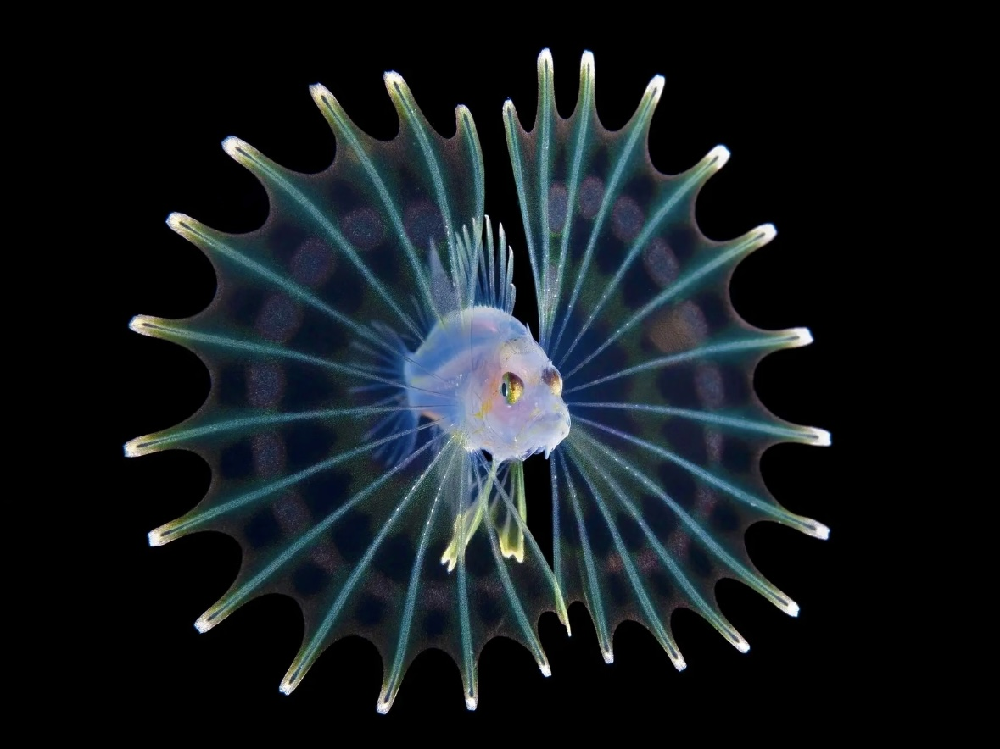

At the ocean’s deepest trench, where light has never touched, something stirs...
something that has been waiting.
Explore
Are.na

China Mieville, "The Scar"
Animals of the Deep
China Mieville, "The Scar"